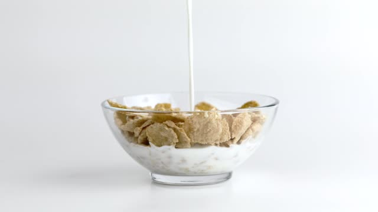

Corn flakes

It's a classic
Ingredients
- Corn flakes
- Almond milk
- Almond butter
Steps
- In a bowl, drop a scoop of almond butter
- Pour some Corn Flakes. I love Kellogg's
- Pour cold almond milk until they cover the Corn Flakes
- Stir well until the milk is mixed with the almond butter.
- Enjoy!